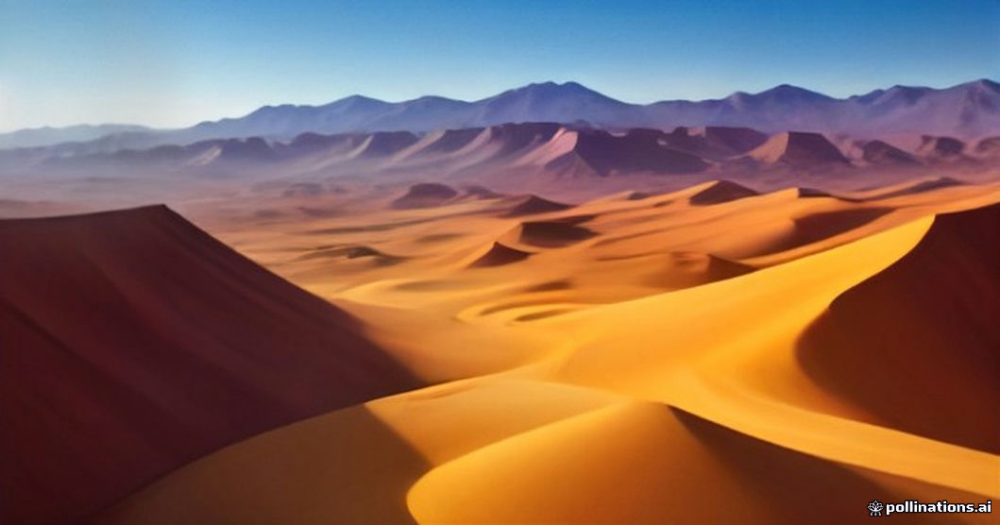

When booking a desert tour from Marrakesh or Fes, most travelers focus entirely on the destination: the dunes of Erg Chebbi, the quality of the tents, or the food. But the reality of Moroccan geography dictates that your experience is largely shaped by the clock before you even leave the city walls. If you leave Marrakesh too late, you will spend hours trapped behind heavy trucks crawling over the Tizi n'Tichka pass.
At Route of the Dunes, we don't sell romance; we manage logistics. The distance from Marrakesh to Merzouga is roughly 560 kilometers of winding mountain roads, flat desert plains, and palm groves. From Fes, it is a similarly demanding 470 kilometers via the Middle Atlas and the Ziz Valley. This planning note breaks down the math behind departure times so you can avoid midnight arrivals and missed camel treks.
The Marrakesh Departure: Beating the Tichka Pass Bottleneck
From Marrakesh, the primary obstacle is the Tizi n'Tichka pass at 2,260 meters. This route carries all commercial traffic, heavy lorries, and tourist minibuses heading toward Ouarzazate and the south. Large trucks frequently break down or crawl at 15 km/h on hairpin turns, creating massive queues that can add two hours to your drive if you hit them at peak morning delivery times.
To clear the pass before the heavy commercial traffic peaks, your vehicle needs to pull away from your marrakesh riad pickup logistics point no later than 7:30 AM. Pushing that back to 9:00 AM doesn't just cost you time; it cascades through the entire itinerary, forcing you to rush through Ait Benhaddou and drive the final stretch into Erg Chebbi in pitch blackness.
- Recommended Marrakesh departure: 7:00 AM to 7:30 AM.
- Absolute latest safe departure: 8:00 AM (guarantees a late arrival at camp).
- Trade-off: An early start means eating a fast, basic breakfast at your riad or packing it to go.
The Fes Departure: Navigating the Middle Atlas and Ziz Valley
Departing from Fes presents a different set of challenges. While you avoid the Tichka pass, you must cross the Middle Atlas via Ifrane and Azrou, descend through the Zaida plains, and navigate the massive Ziz Gorge before reaching Erfoud and the dunes. This route is slightly longer in duration due to lower speed limits through mountain towns and troop checkpoints.
A departure at 7:30 AM from Fes allows your driver to cross the cedar forests while troop activity and local commuter traffic are light. It also ensures you descend the stunning Ziz Valley in late afternoon light rather than rushing through the palm groves in the dark.
- Recommended Fes departure: 7:30 AM.
- Key hazard: Morning frost and black ice in the Middle Atlas during winter months.
- Check out our fes to merzouga road trip safety guide for seasonal warnings.
What Happens If You Leave Late?
Many travelers assume a 9:00 AM or 10:00 AM departure is fine because 'it's just a holiday.' In Morocco's rugged interior, daylight dictates movement. Once the sun drops behind the Atlas or the desert horizon, driving speeds drop significantly due to unlit carts, stray livestock, and fatigue.
If you arrive at the Erg Chebbi dune line after 6:30 PM (depending on the season), you will miss the sunset camel trek entirely. You will be rushed onto a camel in the dark, or worse, forced to take a 4x4 transfer straight to the camp in total darkness, missing the defining landscape shift of the Sahara.
Balancing Riad Breakfasts and Driving Realities
One common friction point with early departures is breakfast. Traditional Moroccan riads take pride in elaborate morning spreads featuring fresh bread, crepes, orange juice, and eggs, typically served from 8:00 AM onward.
If you insist on sitting down for a leisurely 45-minute riad breakfast at 8:00 AM, you are effectively trading your afternoon desert experience for fresh pastries. Smart travelers arrange a 'petit déjeuner emporter' (breakfast to go) the night before, or keep expectations modest for a quick coffee and bread before hitting the road.
| Optimal Time | Acceptable Limit | Consequence of Late Start | |
|---|---|---|---|
| Marrakesh to Merzouga | 7:00 AM - 7:30 AM | 8:00 AM | Stuck in Tichka truck traffic; late camp arrival. |
| Fes to Merzouga | 7:30 AM | 8:15 AM | Darkness in Ziz Valley; missed sunset over dunes. |
| Day 2 Returns (Merzouga to Marrakesh) | 8:00 AM | 9:00 AM | Late night arrival in Marrakesh (post 9:00 PM). |
| Winter Departures | 7:00 AM sharp | 7:30 AM | Shorter daylight window requires absolute punctuality. |

Illustration, not a photograph — for the real thing, you'll have to stand on the ridge yourself.
Quick answers
A few follow-up questions travelers ask about this.
Why can't we just drive faster to make up for a late start?
Moroccan national roads are heavily monitored by the Royal Gendarmerie with speed radars, and winding mountain passes make high-speed driving dangerous. Speed limits drop frequently, and drivers cannot legally or safely exceed them.
Does a private tour allow for more flexible departure times?
Yes, private tours give you control over your schedule. However, physics and traffic remain the same. Even on a private tour, a late departure guarantees a late arrival at the desert camp.
What time does the sun set over the Erg Chebbi dunes?
Sunset varies by season, occurring around 5:30 PM in December and pushing past 8:00 PM in June. Your arrival time must be calibrated against these seasonal windows to ensure you don't miss the desert sunset.
Planning your own route?
Tell us your dates and what matters to you — we'll answer with a straight recommendation, not a brochure.
Send an inquiry See the itineraries